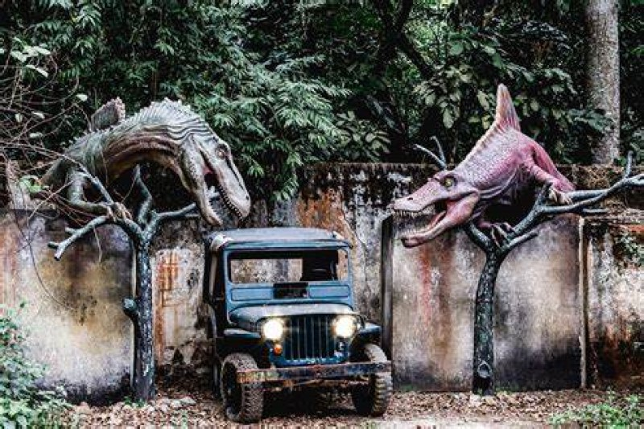

Ao entrar no AdventureLand, os visitantes são recebidos por um cenário colorido e animado,com
música temática ecoando ao fundo, criando uma atmosfera de alegria e expectativa. O parque está
dividido em várias áreas temáticas, cada uma oferecendo uma experiência única. Você pode encon-
trar a "Terra dos Dinossauros", onde as atrações giram em torno de criaturas pré-históricas, ou
a "Ilha dos Piratas", que transporta os visitantes para um mundo de aventuras marítimas e caças ao tesouro.

Entre as atrações mais populares estão a "Montanha do Dragão", uma montanha-russa de alta velocidade
que serpenteia através de cenários de tirar o fôlego, e o "Rio Misterioso", um passeio de bote que
promete emoções aquáticas e surpresas a cada curva. Além das atrações emocionantes, o parque também
oferece uma variedade de espetáculos ao vivo, incluindo shows de mágica, performances de acrobatas e
encontros com personagens que encantam tanto crianças quanto adultos.

Para aqueles que desejam fazer uma pausa entre as aventuras, o AdventureLand abriga uma variedade
de opções de alimentação, desde lanchonetes rápidas a restaurantes temáticos, oferecendo uma ampla
seleção de pratos para satisfazer todos os gostos. Além disso, várias lojas de souvenirs espalhadas
pelo parque permitem que os visitantes levem para casa uma lembrança de sua jornada incrível.